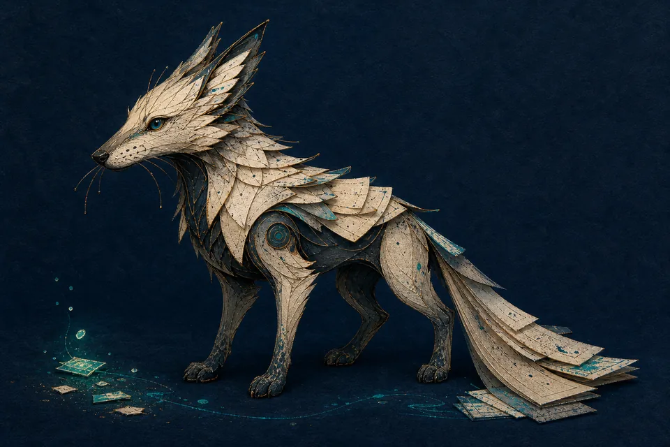
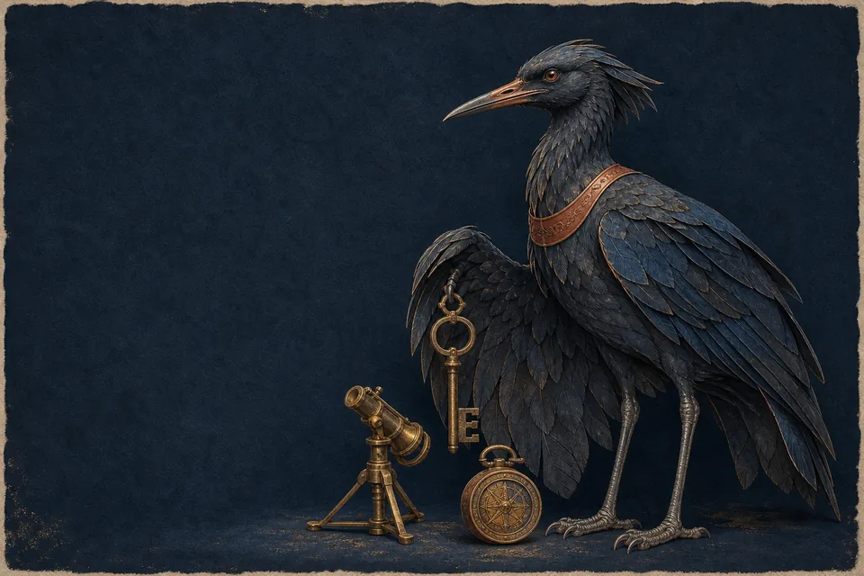
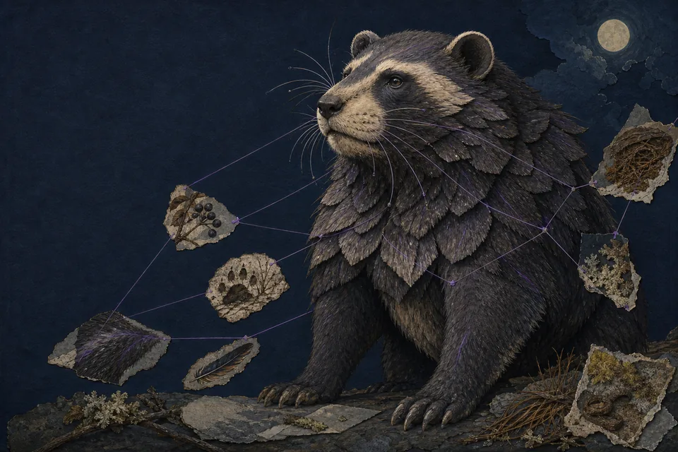

“What is our parental leave policy?”
Failure: wrong answerField guide · Edition one30 min · Based on real usecases.
Magizoology of production systems
Fantastic Agentsand Where to Find Them
Know · Do · Decide
Choose the animal. Design the habitat.
All names of systems have been modified for public display.01 · 23
PremiseAuthority changes the system
One model · three consequences
The hard part is not the brain.
“My card is missing. Can you freeze it?”
Failure: wrong action“Should this transaction be escalated?”
Failure: wrong judgmentThe model can be identical. What changes is the authority we delegate — and the price of being wrong.
Architecture follows consequence02 · 23
DefinitionWhat we mean by agent
A deliberately useful boundary
An LLM agent runs tools in a loop to achieve a goal.
Simon Willison · simonw.substack.com/p/i-think-agent-may-finally-have-a
Goal→Model→Tool request→Harness executes→Observation↺
That lit step is the engineering surface: policy, limits, identity, audit, and recovery live around the model — not inside a prompt.
Tools + loop + stopping condition03 · 23
TaxonomyClassify by highest-consequence freedom
The authority gradient
How much control flow will you give away?
Synthesize evidence
retrieval tools · wrong answerSelect a capability
action tools · wrong actionContribute to judgment
workflow · wrong decisionLow authorityMore failure modes → more explicit controlsHigh authority
These are archetypes, not boxes. A real system may combine all three; classify it by the most consequential freedom it has.
Authority ≠ autonomy04 · 23
Specimen I · Retrieval agentKnow

Plate I · compact scent-tracker of evidence
Sourcehound
Follow the evidence. Leave the trail.
Archivora citans
What is our parental leave policy in Mexico?
Instinct · retrieve & synthesizeAuthority · where to look, what to sayHabitat · internal knowledge
Healthy specimens cite their tracks05 · 23
Sourcehound · InstinctKnow
Agency starts with the next step
A model can steer retrieval without changing the world.
Question→search policies→inspect evidence→answer + citations↺refine · search another source
If one mandatory retrieval step solves the job, normal RAG is enough. Use an agent loop when dynamic investigation of the evidence genuinely adds value.
Read-only does not mean control-free06 · 23
Sourcehound · HabitatKnow
Make authorization part of the tool
Habitat map I · representative production architecture
read only
Identity-aware filtering happens before content enters the model context. The agent may choose a search; it never chooses who is allowed to see the result.
Fictional systems & data07 · 23
Sourcehound · ImplementationKnow
Bounded retrieval loop
agent = create_agent( model=model, tools=[search_policies, get_policy, check_version], middleware=[ ToolCallLimitMiddleware( run_limit=5 ) ], context_schema=EmployeeContext, response_format=GroundedAnswer, )
Bounded. Grounded. Traceable.
A tool description is not authorization.
Trusted identity travels in runtime context.
Citations, or an explicit abstention.
# inside the tool return index.search( query, groups=runtime.context.groups)
API syntax: verify against pinned demo version08 · 23
Sourcehound · Handling protocolKnow
Observed in the wild
It is a hound, not a historian.
Its failure modes are about evidence quality, freshness, access, and the temptation to fill a gap elegantly.
| Observed behavior | Handling protocol |
|---|---|
| Eats the nearest fragment | Retrieval evaluation + reranking |
| Hoards old policy | Versioning, freshness, deprecation |
| Finds a restricted archive | Identity-aware filtering |
| Fills a gap plausibly | Evidence threshold + abstention |
| Leaves no trail | Source IDs + citations |
Next: give the creature hands09 · 23
Specimen II · Action agentDo

Plate II · dexterous instrument-bearer
Keypaw
It can open things.
Instrumentrix cauta
My card is missing. Can you freeze it?
Instinct · select & use toolsAuthority · propose a capabilityHabitat · customer systems
Useful and hazardous for the same reason10 · 23
Keypaw · InstinctDo
A tool is not an API convenience
It is a delegation of authority.
The model proposes a call. Your application still decides whether that proposal may be executed.
search_help_docs()read
get_card_status()sensitive read
freeze_card(card_id)reversible write
transfer_money(…)consequential write
Tool access ≠ user permission ≠ execution approval11 · 23
Keypaw · HabitatDo
Proposal is not execution
Habitat map II · policy boundary around execution
check the collar
The policy layer owns eligibility, schemas, rate limits, identity propagation, confirmation, and audit. The model owns only the proposal.
Fictional customer systems12 · 23
Keypaw · ImplementationDo
Narrow tools, explicit interrupt
agent = create_agent( model=model, tools=[search_help, get_card_status, freeze_card], middleware=[ ToolCallLimitMiddleware(run_limit=6), HumanInTheLoopMiddleware( interrupt_on={"freeze_card": True} ), ], context_schema=CustomerContext, )
Give it a key, not a master key.
freeze_card(card_id) # narrow execute_banking_operation( payload ) # too broad
Dynamic tool selection is genuinely useful here.
Human review can approve, edit, or reject the call.
Controls add up; prompts are one small layer13 · 23
Keypaw · Handling protocolDo
The dangerous animal has hands
Control the behavior around the tool call.
The protocol is a system property — there is no single magic prompt.
| Observed behavior | Handling protocol |
|---|---|
| Chooses the wrong instrument | Small tool set + tool-choice evals |
| Uses the right one incorrectly | Typed schemas + server-side validation |
| Keeps trying | Model/tool limits + timeouts |
| Reads hostile instructions | Treat tool output as untrusted |
| Acts as the wrong customer | Propagated identity + downstream auth |
| Acts silently | Preview, confirmation, audit |
Next: when steps must happen14 · 23
Control flowThe turning point
May happen vs. must happen
A prompt can request an invariant. A workflow can encode one.
- Search another source
- Ask a clarifying question
- Call a status tool
- Collect required evidence
- Run policy checks
- Record rationale
- Escalate uncertainty
Let the model own local reasoning. Keep the global process explicit when it carries operational invariants.
Topology, not mysticism15 · 23
Specimen III · Decision workflowDecide

Plate III · patient pattern-maker of evidence
Caseweaver
Build a case, not a verdict.
Inquisitor probabilis
Should this transaction be escalated?
Instinct · reconcile evidenceAuthority · recommend judgmentHabitat · regulated workflow
Serious; never omniscient16 · 23
Caseweaver · InstinctDecide
The seductive baseline
transaction → LLM →
FRAUD / NOT FRAUD
Classification without a case.
Consequential work needs a recoverable process.
Evidence completeness before assessment
Calibrated confidence + policy route
Structured rationale + provenance
Escalation + durable audit trail
The output is a recommendation17 · 23
Caseweaver · HabitatDecide
Parallel evidence · persistent state · controlled route
Habitat map III · durable workflow topology
some nodes are not LLMs
Mandatory checks are deterministic. Uncertain assessment can be model-assisted. Human review is an external control — not a hopeful sentence in the system prompt.
Why the graph exists18 · 23
Caseweaver · ImplementationDecide
Agentic nodes, deterministic topology
graph = StateGraph(Investigation) graph.add_node("triage", triage) graph.add_node("history", get_history) graph.add_node("device", get_device_signals) graph.add_node("assess", assess_evidence) graph.add_node("human_review", review_case) graph.add_edge(START, "triage") graph.add_conditional_edges( "assess", route_case )
Nodes can be agentic. The route is not.
Deterministic: validation & policy checks
Model-assisted: assessment & rationale
External: human review & case handoff
Complete state and reducers live in the repo appendix.
Do not narrate every line19 · 23
Caseweaver · Handling protocolDecide
Long-running work must survive reality
Pause. Review. Resume.
Graph→save checkpoint→interrupt for review…minutes or days…resume
| Observed behavior | Handling protocol |
|---|---|
| Decides before evidence arrives | Required state fields + joins |
| Treats conflict as certainty | Calibrated confidence + escalation |
| Loses its place on failure | Durable checkpoints + idempotent nodes |
| Cannot explain a recommendation | Provenance + structured rationale |
| Finds a novel case | Human interrupt + case handoff |
Graph ≠ more intelligent; graph = more invariants20 · 23
Completed field guidePhotograph this slide
Three archetypes, one production discipline
Name the authority. Then name the control.
Sourcehound
Keypaw
Caseweaver
Authority
Know
Do
Decide
Delegated freedom
Which evidence tool to use
Which action to propose
Local reasoning inside a controlled process
Main risk
Wrong or unauthorized answer
Wrong action
Wrong recommendation · process failure
Architecture
Retrieval loop + read tools
Agent loop + policy boundary
Explicit stateful graph
Primary control
Grounding + access + limits
Govern execution
Workflow invariants + HITL
Systems can combine all three21 · 23
Decision guideChoose by control flow, not fashion
Start with the least freedom that creates value
Is the prebuilt loop enough?
Mostly predetermined path?Normal code · fixed retrieval
Dynamic tool choice adds value?LangChain agent
Must pause, persist, inspect, or enforce order?Explicit LangGraph workflow
One stack · different control
LangGraph runtime
└── LangChain create_agent
└── model ↔ tools loop
+ middleware
└── LangChain create_agent
└── model ↔ tools loop
+ middleware
The choice is rarely LangChain or LangGraph. It is whether you need to own the topology around the loop.
The abstractions compose22 · 23
CloseFantastic agents in production
A final handling principle
Design for the animal you actually have.
What freedom does this agent actually need?
Give it that freedom. Control everything else.
Thank you23 · 23